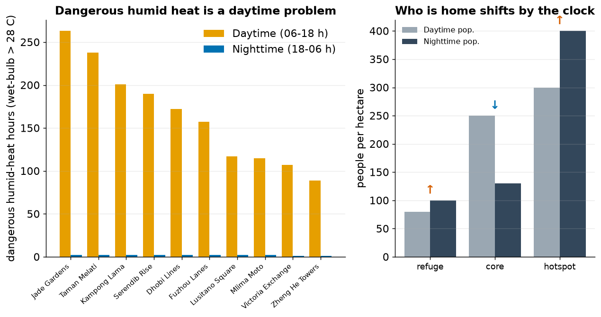
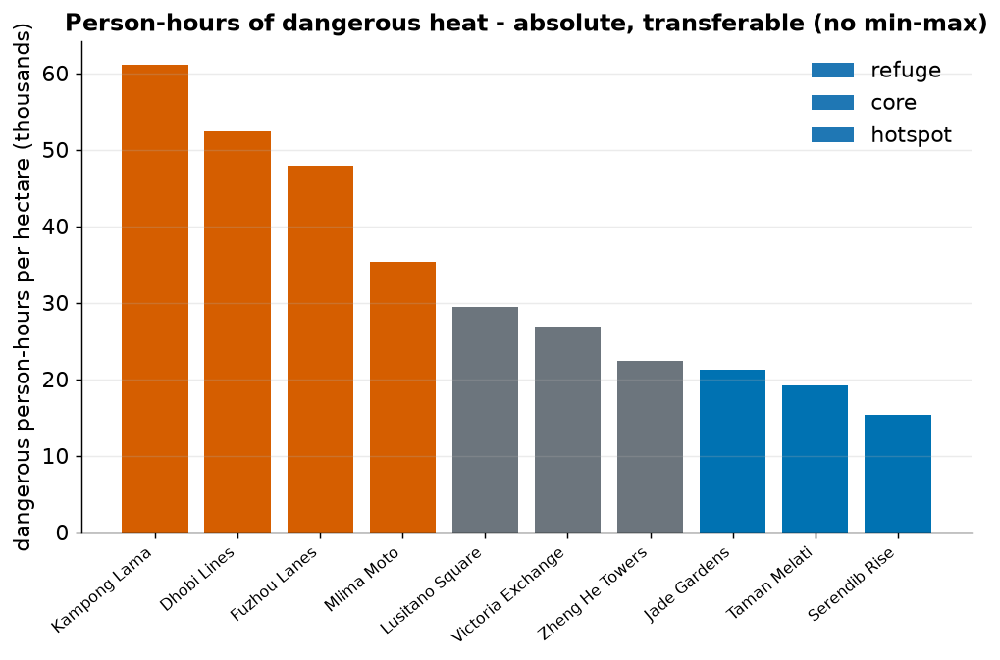
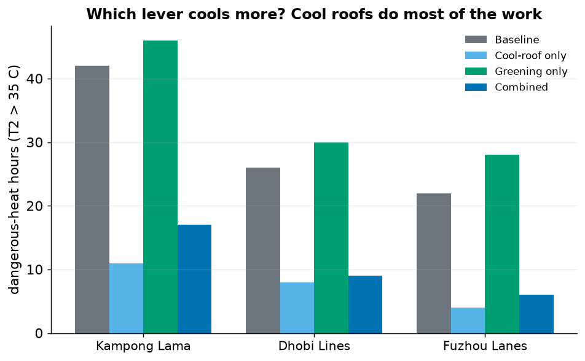
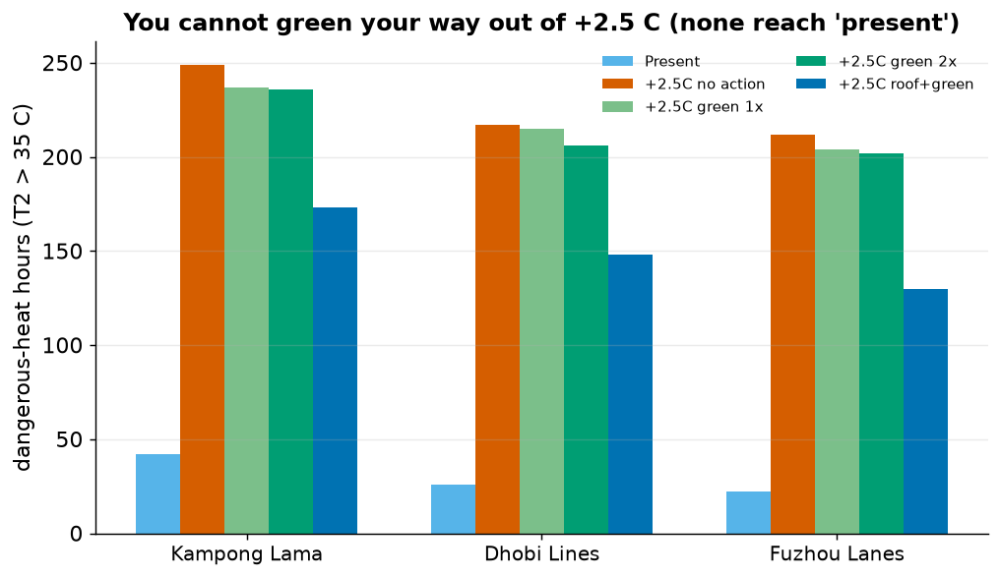
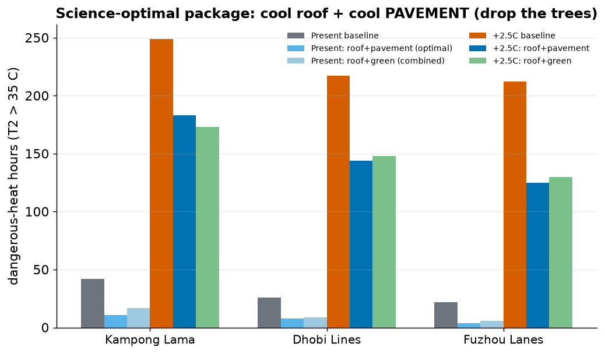
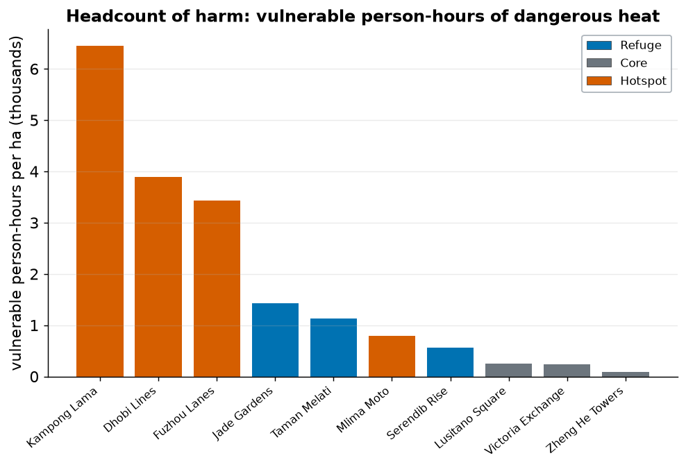

Four checks that make the heat-risk story defensible
Beyond the headline: when heat is dangerous (day vs night), an absolute metric that survives where the
index fails, which intervention lever actually works, whether greening can beat warming, and how robust
the ranking is. ← back to the main story
1. Day vs night — and who is home
UNDRR exposure is time-of-day specific. We split the humid-heat hazard into daytime
(06–18 h) and night (18–06 h) and paired each with the matching population.

Left: dangerous humid heat (wet-bulb > 28 °C) is almost entirely a daytime
phenomenon — nights stay below the wet-bulb line. Right: but the population flips by the clock.
Finding. Daytime is the dangerous window, so daytime exposure dominates — and the formal
cores look busy by day (250 people/ha of commuters) but empty at night
(130/ha). The informal hotspots do the opposite: 300 by day → 400 at night.
So the residual risk after dark falls on exactly the vulnerable residents who are always home. Daytime
heat-relief (shade, water, work pauses) and nighttime cooling refuges are different interventions for
different populations.
2. Person-hours — an absolute metric that doesn't lie
The risk index is relative (min–max), so it hides absolute change and can't compare
cities. Person-hours of dangerous heat = dangerous hours × exposed population is
absolute and transferable — it directly answers the relativity weakness flagged on the main page.

Dangerous person-hours per hectare (daytime + nighttime). Kampong Lama tops at ~61,000 —
and unlike the index, this number is a real quantity you could compare to another city.
Finding. The absolute metric agrees with the index ranking (informal settlements worst)
and survives interventions and cross-city comparison. Use person-hours to track real
progress; use the index only to rank within one snapshot.
3. Which lever cools more? Cool roofs — not greening
We decomposed the intervention: cool-roof-only vs greening-only vs combined (present).

Cool roofs alone cut dangerous-heat hours 69–82%; greening alone
slightly raises them (−10 to −27%); combined lands at −60 to −73%.
Counter-intuitive — and honest. In this water-limited city the dataset's evergreen trees
have albedo 0.14, darker than the 0.20 pavement they replace, and evapotranspiration is
moisture-limited — so greening alone slightly warms daytime air temperature, and even dilutes the
cool-roof gain. Important caveat the model can't see: SUEWS T2 is air
temperature — it does not capture tree shade or radiant comfort, which are large
for pedestrians. So greening is still valuable for human comfort; it just isn't the lever for
air-temperature hazard here. Cool roofs are the robust air-temperature play.
4. Can you green your way out of +2.5 °C? No.

Under +2.5 °C: even doubling greening removes only ~5% of the warming-driven
rise, and roof+green together still sit 3–4× above today. None reach present-day levels.
Planning message. Local measures buy real relief but cannot cancel a hotter
climate — adapt and mitigate. On Kampong Lama: 42 h today → 249 h (+2.5 °C) → 236 h
(2× greening) → 173 h (roof+green). Still four times today.
5. Is the ranking robust? Yes — strikingly
A ranking is only trustworthy if it doesn't depend on arbitrary choices. We varied the
threshold and dropped each vulnerability proxy in turn.
Neighbourhood
rank @34 °C
rank @35 °C
rank @36 °C
drop any 1 of 5 vuln. proxies
Kampong Lama
1
1
1
1 (all cases)
Dhobi Lines
2
2
2
2 (all cases)
Fuzhou Lanes
3
3
3
3 (all cases)
Mlima Moto
4
4
4
4 (all cases)
refuges (Jade/Taman/Serendib)
7=
7=
7=
7= (all cases)
Finding. The risk ranking is identical at 34, 35 and 36 °C, and
identical when any single vulnerability indicator is removed. The headline (hottest ≠
highest-risk; informal settlements worst) is not an artefact of one threshold or one weighting —
it is structural.
6. The science-optimal package: cool roof + cool pavement
Section 3 found greening (low-albedo trees, moisture-limited) slightly warms the air. So the
air-temperature-optimal package drops the trees and keeps the two reflective surfaces.

Cool roof + cool pavement (no trees) beats the roof+green package in both
present and future — e.g. Kampong Lama present 42 → 11 h (optimal) vs 17 h (combined).
Evidence-led recommendation. For lowering air temperature here, reflective roofs
and pavements are the lever; the trees are not (for air temp). Keep trees for shade and comfort
(which T2 can't see) — but don't count on them to cut the dangerous-hour count.
7. Headcount of harm — vulnerable person-hours
Person-hours weighted by who is exposed: dangerous person-hours × the vulnerable
fraction (elderly, children, no-AC, outdoor workers, deprivation).

Vulnerable person-hours per hectare. The informal settlements dominate (Kampong Lama ~6,450) —
and the hot-but-empty refuges fall away once the vulnerable fraction (0.29 vs ~0.51) is applied.
Robust to the UNDRR framing. Splitting vulnerability into sensitivity and a
separate adaptive-capacity pillar (a 4-pillar risk = hazard × exposure × sensitivity ×
lack-of-capacity) gives the identical top-3 (Kampong Lama, Dhobi Lines, Fuzhou Lanes).
The conclusion does not depend on how the socio-economic layer is assembled.
8. Heatwave events & intensity — and a twist
Health systems track events, not hour totals. We counted dangerous days, the longest
consecutive spell, multi-day heatwave events, and degree-hours (intensity × duration).
Neighbourhood
type
hot days
longest spell
heatwave events (≥3 d)
degree-hours
Jade Gardens
refuge
22
9
3
874
Taman Melati
refuge
20
5
3
671
Kampong Lama
hotspot
18
3
1
458
Serendib Rise
refuge
15
4
1
346
Dhobi Lines
hotspot
12
3
1
264
Fuzhou Lanes
hotspot
10
2
0
213
cores (Lusitano/Victoria/Zheng)
core
2–3
1
0
5–57
The twist reinforces the headline. On pure hazard intensity — longest spell
(9 days) and degree-hours (874) — the leafy refuge Jade Gardens is the worst,
not the informal settlements. So the most severe and sustained heat is exactly where the
fewest vulnerable people live. Hottest ≠ highest-risk, seen a third way.
9. Why are smoother places hotter? Quantified
The main story claims low roughness → weak mixing → trapped heat. Here is the number.
Dangerous-heat hours fall steeply with frontal-area density λ_f (roughness): a log-fit explains
R² = 0.73 of the variation across all ten neighbourhoods (−31 hours per decade of λ_f).
Finding. The mechanism isn't hand-waving: roughness alone accounts for three-quarters of
the between-neighbourhood spread in dangerous-heat hours. Smooth, low-rise form traps near-surface heat;
rough, dense form ventilates it.
Write outputs/derived/ext_*.csv / ext2_*.csv and figures 8–14.
Model readiness was checked with SUEWS assess_readiness: 0 assumed sample
defaults — location, land cover and forcing are all site-specific.